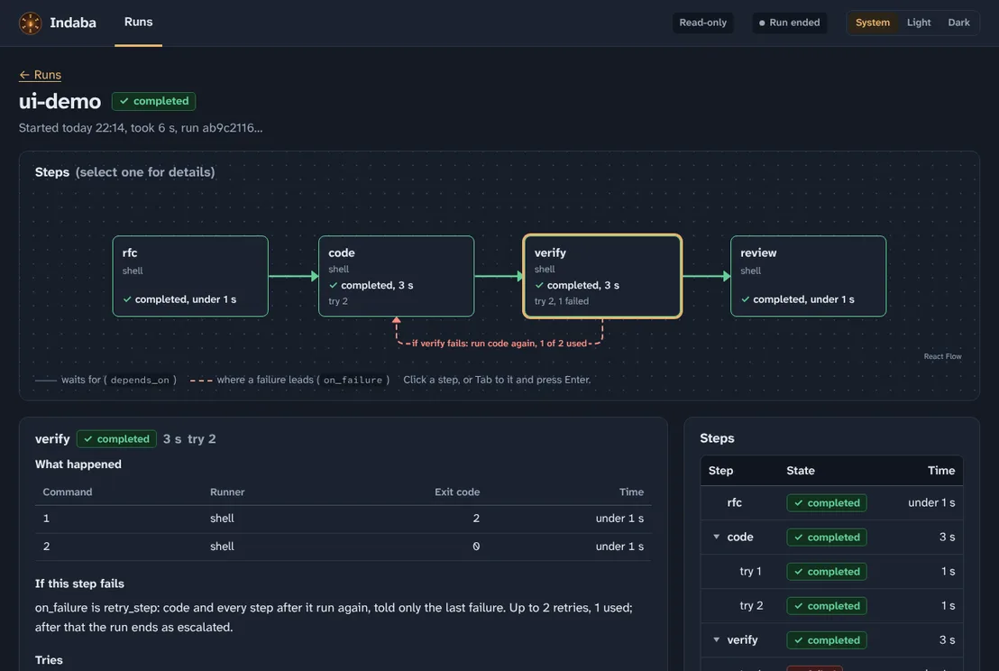

Indaba
Let your agents argue. Ship what they agree on.

npx indaba@next validate workflow.ai.yml
- A declared graph of steps behind exit-code guards. A step passes when its command exits 0, not when a model says so.
- A multi-agent council reaches consensus by cross-examination. When it cannot, a human arbiter decides.
- Runs Claude Code, Codex, Gemini, Cursor or Antigravity in disposable git worktrees.
- OpenTelemetry GenAI traces. Every token and dollar is counted, never invented.
Preview release. The API is not stable below 1.0.